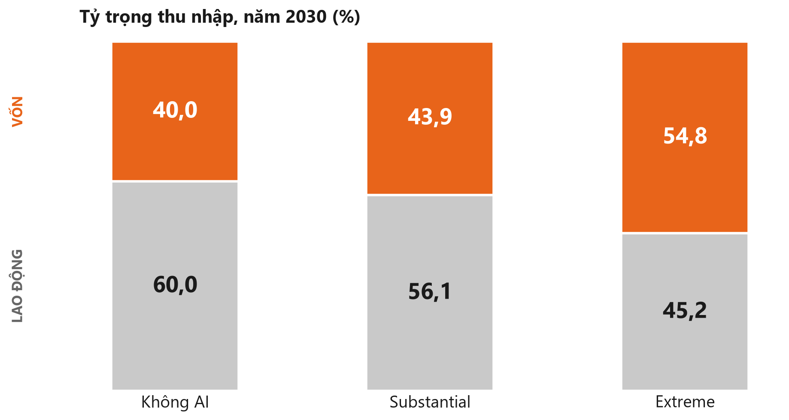
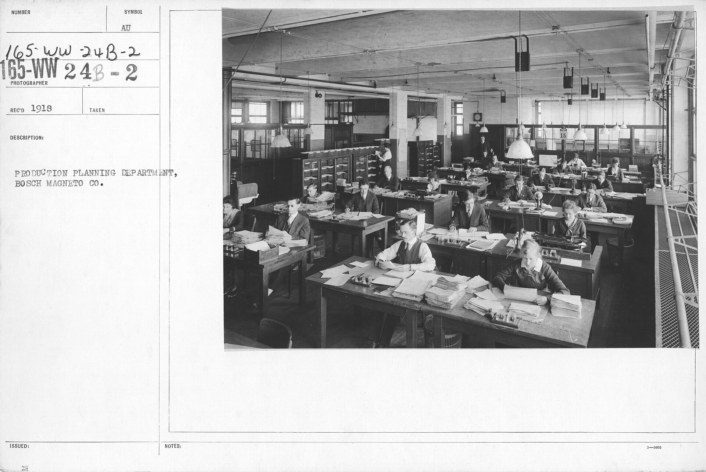
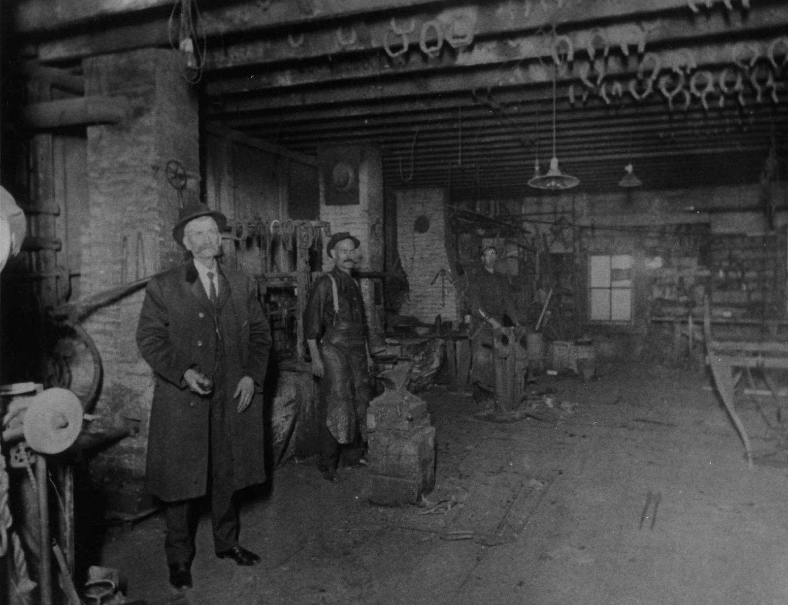

Năng suất tăng thêm nhờ công cụ AI. Chưa nguồn nào đo được nó lớn bao nhiêu.
S3 · S13
②
TRẢ THEO THỜI GIAN
Thời gian là đơn vị mua bán sức lao động — không phải thước đo kết quả.
S6
③
CHỈ MỘT Ô CHO LAO ĐỘNG
Cấu trúc trả công chỉ chừa đúng một ô cho lao động: giờ nhân đơn giá.
S7
④
NGUYÊN CỚ KHÁC NGUYÊN NHÂN
Lý do được nói ra khi cắt giảm — khác với nguyên nhân thật sự.
S8
⑤
QUY KẾT PHẦN GIÁ TRỊ
Tách phần giá trị tăng thêm là của ai. Đây là điểm nghẽn của cả bài.
S9
⑥
QUYỀN HÃM
Khả năng làm chậm hoặc chặn một thay đổi. Giải thích vì sao bên thiệt nhất không phải bên chống nhất.
S11
⑦
KHOẢNG LỆCH HAI ĐẦU HỢP ĐỒNG
Đơn vị tính lúc trả cho người làm khác đơn vị tính lúc bán cho khách.
S12
⑧
CÁI MỚI KẾ THỪA GÌ
Hình thức trả công mới giữ lại gì của hình thức cũ, bỏ gì.
S14
Mạch bài: bày tám từ khoá trước, rồi gỡ từng cái.
Từ khoá ① quay lại ở S13 — vì cả bài khép về đúng câu hỏi đó.
Bản đồ — người nghe luôn biết đang ở đâu2 / 16
1 / 8
TỪ KHOÁ ① — PHẦN NĂNG SUẤT DÔI RA
Một thứ chúng ta biết, và một thứ chưa ai đo
ĐÃ BIẾT — ĐAN MẠCH
Dữ liệu hành chính, 25.000 lao động. Người dùng tự báo tiết kiệm khoảng 3% thời gian. Nhưng thu nhập và giờ công ghi nhận được là NULL — không thấy thay đổi nào, đủ chặt để loại trừ mọi hiệu ứng lớn hơn 2%.
ĐÃ BIẾT — MỸ
Bảng lương ADP tới tháng 6 năm 2026. Điều chỉnh có xảy ra, nhưng ở biên số lượng: doanh nghiệp tuyển ít người đi. Không xảy ra ở biên giá: lương cơ bản đứng yên.
CHƯA AI ĐO — ĐÂY LÀ CÂU HỎI CỦA BÀI
Phần năng suất dôi ra đang tranh chấp lớn bao nhiêu, và ai đang giữ nó? Không một nguồn nào trong bài đo được đại lượng này.
Đặt vấn đề · Kiểm bằng key word ① Phản biện3 / 16
PHƯƠNG PHÁP
Mỗi người một ngành, cùng hai câu hỏi
Ngành
Đơn vị tính đầu vào tổ chức → người làm
Đơn vị tính đầu ra tổ chức → khách
AI vào khâu nào
…
tháng · giờ
giờ · ngày công · gói
…
…
…
…
…
…
…
…
…
ca nghịch
gói · hoa hồng
…
…
Chỉ nói được: cơ chế này CÓ TỒN TẠI.
Không nói được: cơ chế này phổ biến.
Mỗi ngành một ca, do người trong ngành tự thuật · Kiểm bằng key word ④ Thực tế4 / 16
KHUNG PHÂN TÍCH
Ba quy luật, ba câu hỏi
QUY LUẬT MÂU THUẪN
Trả lời câu vì sao nó vận động? Tìm động lực bên trong sự việc, thay vì đổ cho một tác nhân bên ngoài. Gỡ ở slide 9.
QUY LUẬT LƯỢNG – CHẤT
Trả lời câu khi nào thì đổi chất? Xác định Độ, điểm nút và bước nhảy. Gỡ ở slide 13.
PHỦ ĐỊNH CỦA PHỦ ĐỊNH
Trả lời câu rồi sẽ đi về đâu? Cái mới kế thừa gì của cái cũ. Gỡ ở slide 14.
KHUNG NÀY CÓ THIÊN KIẾN — CHÚNG TÔI TỰ KHAI. Chọn cặp Lực lượng sản xuất – Quan hệ sản xuất thì câu "quan hệ lạc hậu phải đổi" là định lý của khung, không phải phát hiện từ dữ liệu. Vì vậy khung chỉ dùng làm ngôn ngữ sắp xếp, không dùng làm bằng chứng.
2 nguyên lý · 3 quy luật · Kiểm bằng key word ③ Hệ thống5 / 16
2 / 8
TỪ KHOÁ ② — TRẢ THEO THỜI GIAN, KHÔNG THEO KẾT QUẢ
Quan hệ làm công mua thời gian, không mua kết quả
HIỆN TƯỢNG — AI CŨNG THẤY
Xong sớm vẫn ngồi đủ giờ. Giấu việc dùng AI. Mô tả công việc thêm dòng "biết dùng AI" nhưng thang lương không thêm dòng nào. Khách ép giá vì "AI làm được mà". Tranh cãi "AI có thay người không".
CÁI IM LẶNG BÊN DƯỚI — BẢN CHẤT
Quan hệ làm công mua thời gian, không mua kết quả. Hợp đồng không có điều khoản nào nói phần chênh lệch giữa hai thứ đó thuộc về ai.
HIỆN TƯỢNG ĐÁNH LỪA NHẤT: "AI CƯỚP VIỆC LÀM". Nó kéo câu hỏi từ AI nhận bao nhiêu sang còn lại bao nhiêu việc — hai câu hoàn toàn khác nhau.
Bản chất ↔ Hiện tượng · Giáo trình slide 87–886 / 16
3 / 8
TỪ KHOÁ ③ — BẢNG LƯƠNG CHỈ CÓ MỘT Ô CHO LAO ĐỘNG
Nội dung mọc thêm một yếu tố; hình thức không có ô cho nó
NỘI DUNG — ĐÃ ĐỔI, MỌC THÊM MỘT YẾU TỐ
Lao động sống nay làm ba việc khác nhau: thực hiện, thẩm định, chịu trách nhiệm. Xuất hiện một yếu tố mới trước đây không có: tư bản dưới dạng công cụ AI. Thêm tri thức tích luỹ của tổ chức, và câu hỏi ai gánh rủi ro khi kết quả sai.
HÌNH THỨC — CHƯA ĐỔI
Vẫn đơn vị đo là giờ, thang bậc theo thâm niên, thể thức hợp đồng cũ, báo giá tính theo thời gian. Cấu trúc này có đúng một ô cho lao động: giờ nhân đơn giá. Giá trị do yếu tố mới tạo ra không có ô nào để ghi.
CHỖ CHÚNG TÔI KHÔNG KHẲNG ĐỊNH ĐƯỢC. Đan Mạch có thị trường lao động linh hoạt, thương lượng lương phi tập trung — tức kênh chia phần có tồn tại — mà kết quả vẫn không thấy gì. Vậy ống thì có, dòng chảy thì không đủ. Vấn đề nằm ở áp suất, không nằm ở ống.
Nội dung ↔ Hình thức · Giáo trình slide 93–947 / 16
4 / 8
TỪ KHOÁ ④ — NGUYÊN CỚ KHÁC NGUYÊN NHÂN
Gà không gáy thì trời vẫn sáng
NGUYÊN CỚ — CÁI ĐƯỢC NÓI RA
"Kinh tế khó khăn, phải cắt giảm chi phí." Đây là lý do doanh nghiệp công bố, và là thứ dễ thu thập nhất.
ĐIỀU KIỆN — CÓ THẬT, NHƯNG KHÔNG PHẢI NGUYÊN NHÂN
Lãi suất cao, ngân sách co lại, dư cung lao động. Những thứ này làm sự việc dễ xảy ra hơn, nhưng tự chúng không gây ra nó.
NGUYÊN NHÂN — CHƯA TÁCH ĐƯỢC
Chưa tách được, vì chưa đo được phần năng suất dôi ra. Phép kiểm khả thi: đối chứng trong cùng một doanh nghiệp, cùng một năm, so nghề phơi nhiễm AI cao với nghề phơi nhiễm thấp — khi đó yếu tố kinh tế vĩ mô bị triệt tiêu.
GIỚI HẠN CỦA PHÉP KIỂM — CHÚNG TÔI TỰ NÊU. Hai giả thuyết "chu kỳ kinh tế giảm đều" và "AI giảm lệch theo nghề" không phân biệt được bằng phép kiểm này, vì suy thoái chưa bao giờ giảm đều theo nghề — và biên tuyển người mới vốn là biên nhạy với chu kỳ nhất.
Nguyên nhân ↔ Kết quả · Kiểm bằng key word ① Phản biện8 / 16
5 / 8
TỪ KHOÁ ⑤ — QUY KẾT PHẦN GIÁ TRỊ CHO AI
Chỉnh thể có ba bên, không phải hai
BÊN A — LAO ĐỘNG SỐNG
Bán thời gian, nhận thu nhập chắc chắn. Sự chắc chắn đó tồn tại được chỉ vì bên B đứng ra hấp thụ rủi ro.
BÊN B — QUYỀN SỞ HỮU VỐN
Gánh rủi ro, và vì gánh rủi ro nên có cơ sở đòi phần dôi ra. Hai bên nương tựa nhau chứ không đơn thuần đối kháng.
BÊN THỨ BA — NGƯỜI TRẢ TIỀN CUỐI
Bản trước của bài chỉ vẽ hai bên, và đó là một lỗi. Nếu khách ép giá thành công thì phần dôi chưa từng vào tổ chức — nó bị cạnh tranh giá đẩy thẳng sang bên mua.
ĐIỂM NGHẼN CỦA CẢ BÀI. Giả thuyết "khách hàng lấy mất" giải thích hiện tượng lương không đổi không kém gì giả thuyết của chúng tôi. Đó là một biến thứ ba chưa bị loại trừ, nên chúng tôi để nó ngay trên hình thay vì giấu đi.
Quy luật mâu thuẫn · Lực lượng sản xuất – Quan hệ sản xuất · Giáo trình slide 106–1119 / 16
Ảnh: Server racks at NERSC, Derrick Coetzee · CC0
SỐ LIỆU
Nếu giả định như thế, thì cấu trúc phân phối sẽ như thế

Kịch bản mô hình hoá — không phải dự báo, không phải quan sát
Tỷ trọng lao động giảm ≠ mọi người lao động nghèo đi cùng bộ số: nghề khác +33,6% · lao động tri thức −11,5%
Ba kịch bản khác nhau ở 8 tham số — không so độ dốc, không nội suy
Korinek et al. 2026 · Anthropic Institute WP 2026-02 · dữ liệu Mỹ10 / 16

6 / 8
TỪ KHOÁ ⑥ — QUYỀN HÃM QUYẾT ĐỊNH SỨC CHỐNG
Sức chống tỉ lệ với quyền hãm, không tỉ lệ với mức thiệt
Bên
Quyền hãm
🟢
Chủ sở hữu mô hình và hạ tầng
cao
🟢
Bên nắm hợp đồng và quan hệ khách hàng
cao
🟢
Người hành nghề tự ký được hợp đồng
trung bình
🔴
Lao động tri thức tầng thực hiện
thấp
🔴
Người chưa được tuyển
bằng không
🔬
Quản lý đo vị thế bằng quân số — giả thuyết
cao
🔬
Bộ phận có quyền phủ quyết công cụ — giả thuyết
rất cao
Mỹ, bảng lương ADP: nhóm 22–25 ở nghề phơi nhiễm cao −19%,
doãng từ 15% · cơ chế là giảm tuyển, không phải sa thải
Vật chất ↔ Ý thức · Canaries 202611 / 16
Ảnh: Production Planning Department, Bosch Magneto · NARA · PD
7 / 8
TỪ KHOÁ ⑦ — KHOẢNG LỆCH GIỮA HAI ĐẦU HỢP ĐỒNG
Cái chung là khoảng lệch giữa hai đầu hợp đồng
CÁI CHUNG — ÁP ĐƯỢC CHO MỌI NGÀNH
Khoảng lệch giữa đơn vị tính ở hai đầu hợp đồng. Đầu vào, tổ chức trả cho người làm theo tháng hoặc theo giờ. Đầu ra, tổ chức bán cho khách theo giờ, theo ngày công, theo gói hoặc theo sản phẩm.
CÁI RIÊNG — MỖI NGÀNH MỘT DẤU
Cùng một khoảng lệch nhưng mỗi ngành mang dấu khác nhau, nên kết luận của ngành này không bê thẳng sang ngành kia được.
KHUNG KHÔNG ÁP ĐƯỢC KHI
Một là AI bị cấm đưa dữ liệu ra ngoài — rào cản thể chế, không phải kỹ thuật. Hai là nghề bán "rủi ro đã được gánh" như kiểm toán, tuân thủ: thời gian ở đó đo sự cẩn trọng, chưa bao giờ nhận là đo sản lượng. Ba là hai đầu hợp đồng chỉ là một người.
Chung – Riêng – Đơn nhất · Kiểm bằng key word ③ Hệ thống · Giáo trình slide 89–9012 / 16
1 / 8 — QUAY LẠI
TỪ KHOÁ ① — PHẦN NĂNG SUẤT DÔI RA · KHÉP VÒNG
Bốn ứng viên — dữ liệu hiện có không phân biệt được
CÁI LƯỢNG CẦN ĐO
Kích thước phần năng suất dôi ra. Chưa nguồn nào đo. Ba con số duy nhất đang có: khoảng 3% thời gian do người dùng tự báo; thu nhập không thấy thay đổi; và năng suất tổng hợp của nền kinh tế tăng không quá 0,66% trong một thập kỷ.
BỐN ỨNG VIÊN — DỮ LIỆU CHƯA PHÂN BIỆT ĐƯỢC
H1 phần dôi vào bên mua sức lao động, vì hợp đồng mặc định giao phần chênh cho bên đó. H2 phần dôi vốn còn nhỏ, chưa có gì đáng để tranh chấp. H3 khách hàng lấy qua ép giá, nên nó chưa từng vào tổ chức. H4 có độ trễ, chưa kịp lên sổ sách.
HAI PHÉP ĐO PHÂN BIỆT ĐƯỢC — KHÔNG CẦN KHẢO SÁT
Phân biệt H1 với H3: đo biên lợi nhuận gộp trước và sau khi dùng AI, cùng khách, cùng kỳ. Không tăng thì là H3; tăng mà lương không đổi thì là H1. Phân biệt H1 với H2: đo sức mặc cả độc lập với lương — số lời mời cạnh tranh, thời gian tuyển người thay thế, tỷ lệ nghỉ tự nguyện.
★ Lượng – Chất · CLO5 · Kiểm bằng key word ④ Thực tế13 / 16
8 / 8
TỪ KHOÁ ⑧ — CÁI MỚI KẾ THỪA GÌ CỦA CÁI CŨ
Cái bị phủ định là thước đo — và nó chưa bị phủ định

thợ có búa ≠ người dùng có mô hình → xoáy ốc, không phải vòng tròn
BA CHẶNG
[1] Trả theo kết quả — khoán, thợ tự sở hữu công cụ. [2] Trả theo thời gian — phủ định lần một, vì đầu ra không đo được. [3] Trả theo đầu ra — phủ định lần hai, chưa xảy ra. Chặng [3] sẽ giống [1] ở nguyên tắc nhưng khác hẳn ở quyền sở hữu công cụ: thợ có búa không giống người dùng có mô hình. Vì vậy là xoáy ốc, không phải vòng tròn.
CƠ CHẾ CŨ CỦA CHÚNG TÔI ĐÃ SAI
Bản trước nói "khi đầu ra để lại vết thì phủ định lần hai xảy ra". Nhưng nhật ký thao tác, quản lý phiên bản, phiếu công việc đã có hàng chục năm. Nếu vết đầu ra là ràng buộc thì phủ định lần hai đã xảy ra từ lâu. Nó không xảy ra, nên vết không phải là ràng buộc.
HAI THƯỚC ĐO ĐANG SONG SONG TỒN TẠI — lương tháng và khoán theo kết quả. Còn song song thì chưa phải phủ định, mới chỉ là cạnh tranh. KẾ THỪA BẮT BUỘC: chia rủi ro, sàn thu nhập, và tiền nuôi người học nghề.
Phủ định của phủ định · Giáo trình slide 112–11614 / 16
Ảnh: G.M.D. Hill in his blacksmith shop, 1900 · NPS · PD
KIẾN NGHỊ
Đo trước đã — rồi mới bàn xây gì
ĐƠN VỊ NÀO ÁP DỤNG — ĐỀ BÀI HỎI THẲNG CÂU NÀY
Ban giám đốc quyết có làm hay không. Phòng nhân sự phụ trách lương thưởng dựng thước đo và thang chia. Quản lý dự án chạy thí điểm trên một nhóm. Công đoàn cơ sở giám sát phần chia rủi ro.
BẮT ĐẦU Ở ĐÂU CHO RẺ NHẤT
Ở hợp đồng trọn gói. Vì đơn vị bán ra đã là sản phẩm chứ không phải giờ, nên nếu AI rút ngắn thời gian thì phần dôi lộ ra trong nội bộ ngay kỳ đầu, chưa kịp bị khách ép giá. Đó là chỗ phép đo ở việc số 0 rẻ nhất và sạch nhất.
★ Khả năng ↔ Hiện thực · CLO5 · Kiểm bằng key word ② Pháp lý15 / 16
Chúng tôi biết mình chưa biết gì — và đó là kết quả
Dữ liệu nói rõ một điều: điều chỉnh không diễn ra trên tiền lương.
Dữ liệu không nói được: phần dôi lớn bao nhiêu, và ai giữ nó.
BỐN LẦN CHÚNG TÔI TỰ BÁC BỎ MÌNH
1 vị trí điểm nút — ba kịch bản khác nhau 8 tham số, không phải một 2 "hai dấu ngược nhau" — hai số nằm trong cùng một mô hình, lập luận vòng tròn 3 chỉ số gãy thước — đòi sản lượng cá nhân, thứ cả bài nói là không có 4 "trừ khi có sức mặc cả" — không đo được nên không dữ kiện nào bác được
Mỗi lần bỏ một mệnh đề, bài mất một câu nghe hay và
được một câu đứng vững.
Đó là toàn bộ nội dung của chữ "con người dẫn dắt".
Tất nhiên ↔ Ngẫu nhiên · ① ③ ④16 / 16
DỰ PHÒNG
Độ tin cậy từng kết luận
Kết luận
Chân đế
🟢
Điều chỉnh KHÔNG diễn ra trên biên tiền lương
Humlum & Vestergaard · Canaries
🟢
Có điều chỉnh trên biên tuyển dụng, ở nhóm mới vào nghề
Canaries — 22–25 tuổi −19%
🟢
Bên chống mạnh nhất ≠ bên thiệt nhất (Mỹ)
Canaries, bảng lương ADP
🟢
"accrues as capital income" là suy ra, không phải quan sát
tài liệu tự nói · chữ "therefore"
🟡
Dưới trả theo giờ, sản lượng thực hiện < sản lượng khả thi
Lazear — nhưng nửa do sàng lọc
🟡
H1–H4 là bốn ứng viên, dữ liệu chưa phân biệt được
phiếu câu 3, 4, 8
🟡
Cái chung = khoảng lệch đơn vị tính hai đầu hợp đồng
phiếu câu 1 — cần ca nghịch
🟡
Hình thức chỉ có một ô cho lao động
Đan Mạch có ống mà vẫn không đổi
🟡
Vòng giấu năng suất có tồn tại
phiếu 7a+7b · tương đương quan sát
🟡
Ba cơ chế quản lý cấp trung có tồn tại
phiếu 8a/8b — chưa có bằng chứng
🟡
Việt Nam còn trong Độ
ITviec, khảo sát 846 người — là lý do tự khai
🟡
Phủ định chưa hoàn tất
hai thước đo song song tồn tại
🔴
Chi trả ra nước ngoài tăng nhanh hơn giá trị giữ lại
chưa tra cán cân thanh toán
🟢 4 · 🟡 8 · 🔴 1 · ❌ đã bỏ 4
DỰ PHÒNG
Bốn thứ đã bỏ, và vì sao
Đã bỏ
Lý do
Điểm nút giữa Substantial và Extreme
Ba kịch bản khác nhau ở 8 tham số; trục dùng để so tự nó là tích của hai tham số → so độ dốc không hợp lệ
Chỉ số gãy thước
Đòi sản lượng từng người theo phân vị — thứ mà S8, S9, S15 đều nói là không quy kết được. Chỉ số chạy được khi và chỉ khi luận đề của chính nó sai
"Trừ khi bên bán có sức mặc cả"
Sức mặc cả không đo được → lương không tăng thì bảo không có, lương tăng thì bảo có. Không dữ kiện nào bác được
"Mỹ mất việc nhưng giữ phần vốn"
Mệnh đề về tương lai, thuộc kịch bản — và nằm ngoài phạm vi chủ thể đã tuyên bố ở slide 1
DỰ PHÒNG
Nhóm kiểm chéo bằng gì
Năm chỗ hội tụ — nhiều lăng kính, nhiều đường, cùng kết luận
Con số 60%→45,2% là hiện tượng, không phải bản chất
bản chất–hiện tượng · nhân quả · mâu thuẫn
Sở hữu công cụ là mắt xích quyết định
nhân quả · bản chất · mâu thuẫn · xã hội
Giấu dùng AI là hành vi hợp lý, không phải vấn đề đạo đức
bản chất · nhân quả · mâu thuẫn · xã hội
Bên chống mạnh nhất ≠ bên thiệt nhất
xã hội — xác nhận bằng bảng lương Mỹ
Trả công theo thời gian chưa bao giờ là phép đo
nội dung–hình thức · chung–riêng · mâu thuẫn
Ba chỗ chỏi nhau
Lượng–chất nghiêng khung A, bảy cái còn lại nghiêng B
→ giải sai, đã bỏ cả hai khung, thay bằng bốn giả thuyết
AI tập trung hoá hay phi tập trung hoá tư liệu sản xuất?
→ chưa giải được, để làm câu hỏi mở
Cách phát biểu "ý thức lạc hậu"
→ nhận sai, đã sửa thành thiết chế lạc hậu
DỰ PHÒNG
Phiếu ca ngành — 8 câu
#
Câu hỏi
Đọc kết quả
1
Đo và trả công bằng gì — hai vế: tổ chức trả anh/chị theo đơn vị gì, và bán ra cho khách theo đơn vị gì
hai đầu cùng đơn vị mà vẫn có vấn đề → "khoảng lệch" không phải cái chung
2
AI đã vào khâu nào chưa?
—
3
Biên lợi nhuận gộp có đổi không? Đơn giá bán cho khách có bị ép xuống không?
biên không tăng dù thời gian giảm → H3 · tăng mà lương không đổi → H1
4
Một đầu việc điển hình trước cần bao nhiêu giờ, nay bao nhiêu?
mức tiết kiệm nhỏ → H2
5
Trước khi có AI, lương theo thời gian có được điều chỉnh theo kết quả không?
không → thời gian chưa bao giờ là phép đo
6
Cách tính thu nhập có đổi gì trong 24 tháng qua?
không đổi gì trong khi sản lượng đã tăng → luận điểm phủ định sai
7
Có báo lên phần thời gian tiết kiệm được không? Sau khi báo, định mức có bị nâng?
không ca nào mô tả được chuỗi → cơ chế giấu không tồn tại trong mẫu
8
Có offer cạnh tranh không? Tuyển thay một người mất bao lâu?
sức mặc cả cao mà lương không nhúc nhích → H1 sống
Bắt buộc gài ít nhất một ca nghịch — nếu cả 5 người đều trả theo thời gian thì biến độc lập không có biến thiên, phiếu chỉ thu về 5 lần xác nhận.
DỰ PHÒNG
Nguồn
Nguồn quan sát thật — bài đứng trên đây
Humlum & Vestergaard (2025), NBER WP 33777
Đan Mạch, dữ liệu hành chính, 25.000 lao động — không đổi — đo chính xác, loại trừ hiệu ứng >2%
Brynjolfsson et al. (2026), Canaries in the Coal Mine?
Mỹ, bảng lương ADP tới 6/2026 — nhóm 22–25 nghề phơi nhiễm cao −19%
Lazear (2000), AER 90(5)
Safelite: lương giờ → trả theo sản phẩm, sản lượng/người +44%
Acemoglu (2025), Economic Policy 40(121)
tác động năng suất tổng hợp ≤ 0,66% trong 10 năm
Nguồn Việt Nam — mỏng, và là lý do tự khai
ITviec (2025), n = 846, thu 6–7/2025
48,6% dự định mở rộng đội IT (2021 là đỉnh chu kỳ vốn rẻ) · 24,7% nêu lý do năng suất AI · 5,4% tin hoàn toàn đầu ra AI
Nguồn kịch bản — do chính một hãng AI công bố về sản phẩm họ bán